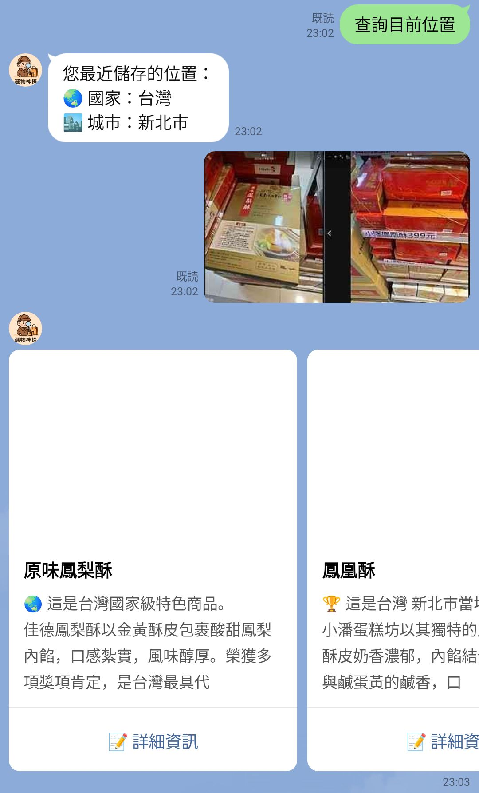
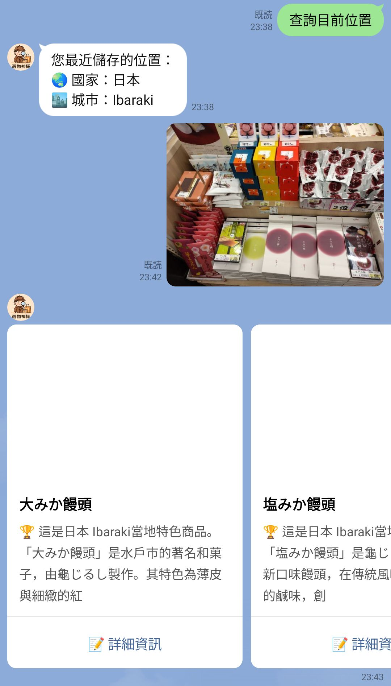
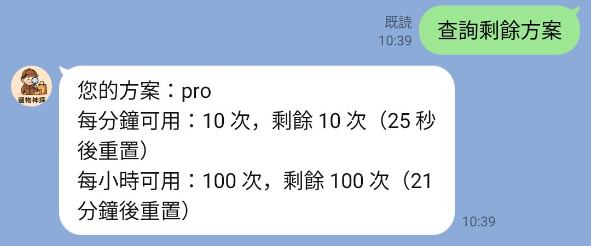

選物神探
用 AI 分析商品圖片，推薦好物！
加入 LINE Bot 試用📷 AI 圖片辨識
上傳商品圖片，AI 智慧判斷是否為特色商品，並提供相關資訊。
💬 LINE Bot 整合
用 LINE 傳圖片就能快速獲得推薦。
📈 彈性方案管理
提供免費試用方案，並可隨時查詢剩餘次數。
使用畫面預覽

上傳商品圖片，AI 智慧辨識並提供特色商品資訊

支援跨國商品辨識與當地特產資訊

隨時查詢您的使用方案與剩餘次數
支持我們開發
如果你喜歡這個工具，歡迎贊助我們持續開發 ❤️

常見問題
Q：這是免費的嗎？
目前開放試用階段完全免費，未來可能推出進階版本。
Q：我可以上傳什麼圖片？
目前主要支援食物商品的圖片上傳，AI 會根據您上傳的圖片內容，自動判斷並推薦相關的特色商品。我們也持續擴展辨識範圍，未來將支援更多種類的商品圖片。
Q：LINE Bot 有什麼功能？
圖片上傳與辨識、辨識特色商品、支援功能選單、方案查詢等。
Q：如何查詢我的使用方案？
您可以在 LINE Bot 中透過選單或輸入指令查詢您的方案詳情及剩餘次數。